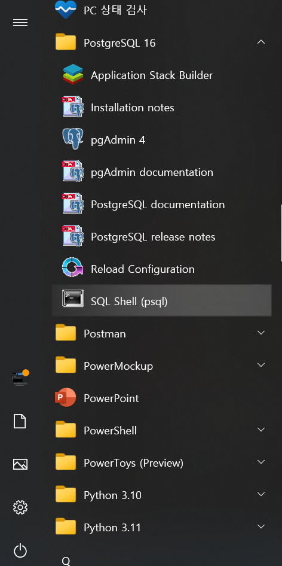
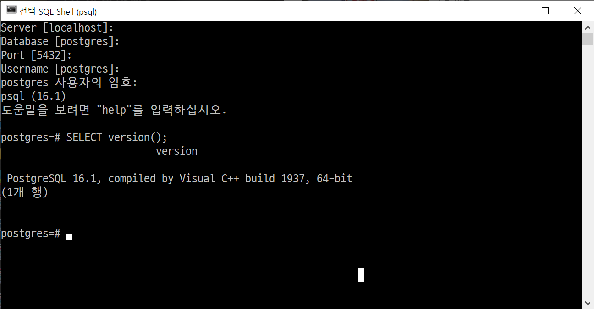
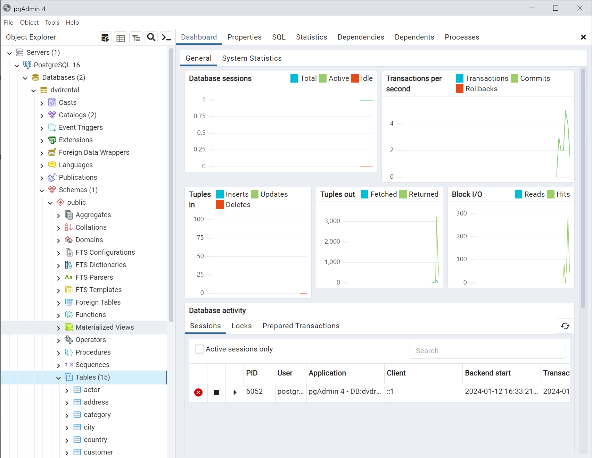
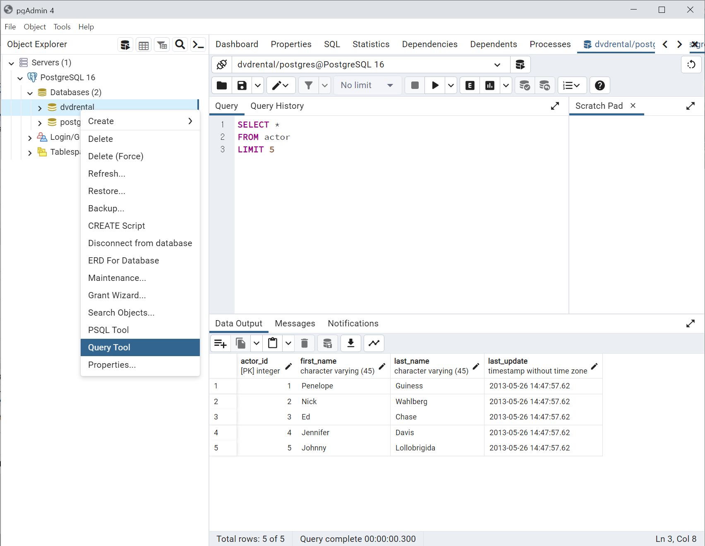
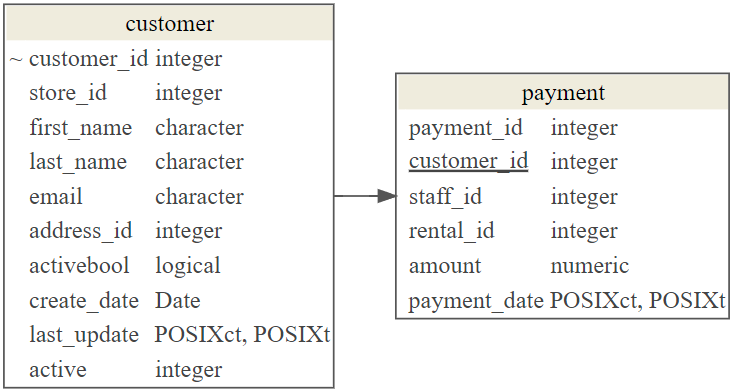

Database [postgres]:
Port [5432]:
Username [postgres]:
postgres 사용자의 암호:
psql (11.5)
도움말을 보려면 "help"를 입력하십시오.
postgres=# CREATE DATABASE dvdrental;
CREATE DATABASE15 DVD 대여 데이터베이스
15.1 PostgreSQL 1 2
PostgreSQL은 확장 가능성 및 표준 준수를 강조하는 객체-관계형 데이터베이스 관리 시스템(ORDBMS)의 하나로 BSD 라이선스로 배포되며 오픈소스 개발자 및 관련 회사들이 개발에 참여하고 있다. 소규모의 단일 머신 애플리케이션에서부터 수많은 동시 접속 사용자가 있는 대형의 인터넷 애플리케이션(또는 데이터 웨어하우스용)에 이르기까지 여러 부하를 관리할 수 있으며 macOS 서버의 경우 PostgreSQL은 기본 데이터베이스로 상용 오라클 데이터베이스를 대체하는 오픈소스 데이터베이스로 알려져 있다.
15.1.1 PostgreSQL 설치 3
PostgreSQL: The World’s Most Advanced Open Source Relational Database 웹사이트에서 PostgreSQL 다운로드 한다. 윈도우에 설치하는 경우 다음을 참고한다. 설치과정에서 나중에 도움이 될만한 정보는 다음과 같다.
- 설치 디렉토리:
C:\Program Files\PostgreSQL\16 - 포트:
5432 - 사용자명:
postgres

PostgreSQL 16 → SQL Shell (psql)을 클릭한 후에 postgreSQL 헬로월드를 찍어본다. 설치과정에서 등록한 비번만 넣어주고 나머지는 로컬호스트와 기본 디폴트 설정된 데이터베이스를 사용할 것이라 postgres 사용자 비밀번호만 넣어준다. 그리고 나서 postgre=# 쉘에 SELECT version() 명령어를 넣어준다.

15.1.2 예제 데이터베이스 - pagila 4
PostgreSQL Sample Database를 Github에서 구해서 설치하거나, PostgreSQL Sample Database, Load PostgreSQL Sample Database을 참조하여 DVD 대여 데이터베이스를 설치한다.
-
SQL Shell (psql)쉘을 실행하여dvd데이터베이스를 생성한다.
-
Windows + R단축키를 실행시켜cmd를 입력하여 윈도우 쉘을 구동시킨다. 그리고postgreSQL을 설치한 윈도우 디렉토리로 이동한다.C:\Program Files\PostgreSQL\11\bin디렉토리가 된다. 그리고 나서 다운받은dvdrental.zip파일 압축을 풀어dvdrental.tar을 지정한다.
-
pg_restore명령어는 데이터베이스를 생성시키는 역할을 한다. -
-U postgres인자는 사용자를 지정한다. -
-d dvd인자는 데이터베이스를 지정한다. -
C:\dvdrental\dvdrental.tar인자는 파일로 저장된 데이터베이스 정보를 담고 있다.
C:\Program Files\PostgreSQL\16\bin> pg_restore -U postgres -d dvdrental C:\dvdrental\dvdrental.tar
암호:
C:\Program Files\PostgreSQL\11\bin>
15.1.3 DVD 대여 질의문 작성 5
dvd 데이터베이스가 설치되었기 때문에 쿼리를 던지기 위해서는 postgreSQL 데이터베이스에 접속을 해야한다. 이를 위해서 pgAdmin 4를 실행시키게 되면 웹브라우져에 웹인터페이스가 생기게 된다. 데이터베이스를 dvd로 지정하고 하고 나서, Tools → Query Tool을 클릭하게 되면 해당 데이터베이스 테이블에 쿼리를 던질 수가 있게 된다.

데이터베이스 사용자 추가
postgres 사용자는 이미 존재하기 때문에 별도로 tidyverse 사용자를 추가하고 권한을 부여한다. \du 명령어로 사용자가 정상 등록되었는지 확인한다.
postgres=# create user tidyverse with encrypted password '1234';
CREATE ROLE
postgres=# grant all privileges on database dvd to tidyverse;
GRANT
postgres=# \du
롤 목록
롤 이름 | 속성 | 소속 그룹:
-----------+------------------------------------------------+------------
postgres | 슈퍼유저, 롤 만들기, DB 만들기, 복제, RLS 통과 | {}
tidyverse | | {}R에서 postgreSQL 연결
postgreSQL DBMS 내부에 dvd 데이터베이스가 생성되었다. 이를 R에서 작업하기 위해서 RPostgreSQL, DBI 팩키지를 도입한다. dbConnect() 함수에 데이터베이스와 연결에 필요한 모든 정보를 저장시킨다. 그리고 나서 dbGetQuery() 함수로 쿼리를 던져 원하는 결과를 받아온다.
library(tidyverse)
library(RPostgreSQL)
pgdrv <- dbDriver("PostgreSQL")
rental_con <- DBI::dbConnect(pgdrv,
dbname="dvdrental",
host="localhost",
port="5432",
user="postgres",
password=Sys.getenv("POSTGRES_PASSWORD"))
actor <- dbGetQuery(rental_con, "SELECT * FROM actor LIMIT 5")
# DBI::dbDisconnect(rental_con)dbGetQuery()로 가져온 데이터프레임을 dplyr 동사로 후속작업을 진행한다.
작업에 필요한 테이블 찾기
데이터베이스에서 쿼리 작업을 수행할 때 가장 먼저 해야 되는 일중의 하나가 적합한 테이블을 찾는 것이다. 이를 위해서 각 DBMS마다 나름대로 정리를 해둔 메타테이블이 존재한다. postgreSQL의 경우는 pg_catalog.pg_tables가 된다. 가장 많이 사용되는 SQL 데이터베이스별로 동일한 사안에 대해서 찾아보자.
-
postgreSQL:SELECT * FROM pg_catalog.pg_tables; - sqlite3:
.tables - MS
SQL 서버 - Transact-SQL:SELECT * FROM INFORMATION_SCHEMA.TABLES; - MySQL:
SHOW TABLES;
qry <- "SELECT *
FROM pg_catalog.pg_tables"
dbGetQuery(rental_con, qry) %>%
filter(schemaname == 'public') |>
select("tablename", "tableowner", "hasindexes",
"hasrules", "hastriggers", "rowsecurity") |>
slice(1:5)
#> tablename tableowner hasindexes hasrules hastriggers rowsecurity
#> 1 actor postgres TRUE FALSE TRUE FALSE
#> 2 store postgres TRUE FALSE TRUE FALSE
#> 3 address postgres TRUE FALSE TRUE FALSE
#> 4 category postgres TRUE FALSE TRUE FALSE
#> 5 city postgres TRUE FALSE TRUE FALSE테이블 별 칼럼명
다음으로 테이블을 찾았다고 하면, 해당되는 칼럼명을 찾을 수 있어야 한다. 이를 통해서 유의미한 의미를 찾아낼 수 있는데 칼럼명을 통해 영감을 받아 다가설 수 있게 된다.
col_qry <- "SELECT table_name,
STRING_AGG(column_name, ', ') AS columns
FROM information_schema.columns
WHERE table_schema = 'public'
GROUP BY table_name;"
dbGetQuery(rental_con, col_qry) %>%
filter(table_name %in% c( "actor", "rental", "store"))
#> table_name columns
#> 1 actor actor_id, last_update, first_name, last_name
#> 2 rental rental_id, rental_date, inventory_id, customer_id, return_date, staff_id, last_update
#> 3 store store_id, manager_staff_id, address_id, last_updateDVD ER 다이어그램
후속 쿼리 분석 작업을 위해서 도움이 되는 ER 다이어그램은 다음과 같다.

15.2 DVD DB 인사이트
DVT 대여 데이터베이스를 설치했다면 다음 단계로 다양한 SQL 쿼리문을 던져 뭔가 가치 있는 정보를 추출해야만 한다. 데이터 과학: “postgreSQL - DVD 대여 데이터베이스”에서 데이터베이스 설치와 접속에 대한 사항은 확인한다.
15.2.1 DB 접속 헬로월드 6
먼저 DBI::dbConnect()를 통해 접속하고 SQL 쿼리 헬로월드를 던져보자.
library(tidyverse)
library(RPostgreSQL)
pgdrv <- dbDriver("PostgreSQL")
rental_con <- DBI::dbConnect(pgdrv,
dbname="dvdrental",
host="localhost",
port="5432",
user="postgres",
password=Sys.getenv("POSTGRES_PASSWORD"))
actor <- dbGetQuery(rental_con, "SELECT * FROM actor LIMIT 5")
actor
#> actor_id first_name last_name last_update
#> 1 1 Penelope Guiness 2013-05-26 14:47:57
#> 2 2 Nick Wahlberg 2013-05-26 14:47:57
#> 3 3 Ed Chase 2013-05-26 14:47:57
#> 4 4 Jennifer Davis 2013-05-26 14:47:57
#> 5 5 Johnny Lollobrigida 2013-05-26 14:47:5715.2.2 이탈/잔존고객 구매금액
customer 테이블에는 active 칼럼을 통해 잔존고객과 이탈고객을 파악할 수 있다. 이를 통해서 잔존고객과 이탈고객이 몇명이고 구매금액을 파악할 수 있다. 먼저 datamodelr 팩키지를 통해 해당 테이블을 뽑아내서 이를 시각화해보자.
library(tidyverse)
library(datamodelr)
payment <- tbl(rental_con, "payment") %>% collect()
customer <- tbl(rental_con, "customer") %>% collect()
payment_customer_model <- dm_from_data_frames(payment, customer)
payment_customer_model <- dm_add_references(
payment_customer_model,
customer$customer_id == payment$customer_id
)
payment_customer_graph <- dm_create_graph(payment_customer_model, rankdir = "LR", col_attr = c("column", "type"))
dm_render_graph(payment_customer_graph)
con을 통해 DVD 대여 데이터베이스에 접속이 이루어진 상태다. 이탈고객과 잔존고객별로 구매금액에 대한 평균, 최소, 최대, 총합계를 구하려면 두 테이블을 INNER JOIN으로 customer_id를 키값으로 합치고 나서 기술통계를 산출한다.
sql_query <-
"SELECT active,
COUNT(*) AS num_active,
MIN(amount) AS min_amt,
AVG(amount) AS avg_amt,
MAX(amount) AS max_amt,
SUM(amount) AS total_amt
FROM payment AS p
INNER JOIN customer AS c
ON p.customer_id = c.customer_id
GROUP BY c.active;"
dbGetQuery(con, sql_query)
#> active num_active min_amt avg_amt max_amt total_amt
#> 1 0 369 0.99 4.092981 11.99 1510.31
#> 2 1 14227 0.00 4.203397 11.99 59801.7315.2.3 쟝르별 평균 대여평점
앞서와 마찬가지로 쟝르별 평균 대여평점을 계산할 수 있는 테이블을 쭉 뽑아본다. 이를 통해서 3개 테이블, 즉 category, film_category, film을 뽑아놓고 각 해당 키값을 사용하여 결합시킨다.
category <- tbl(rental_con, "category") %>% collect()
film_category <- tbl(rental_con, "film_category") %>% collect()
film <- tbl(rental_con, "film") %>% collect()
rental_rating_model <- dm_from_data_frames(category, film_category, film)
rental_rating_model <- dm_add_references(
rental_rating_model,
category$category_id == film_category$category_id,
film_category$film_id == film$film_id
)
rental_rating_graph <- dm_create_graph(rental_rating_model, rankdir = "LR", col_attr = c("column", "type"))
dm_render_graph(rental_rating_graph)
먼저 film_category와 category를 결합시켜 영화(film)가 속한 쟝르(category)를 파악한다.
rate_qry <-
"SELECT *
FROM category AS c
INNER JOIN film_category AS fc
ON c.category_id = fc.category_id
LIMIT 5;"
dbGetQuery(rental_con, rate_qry)
#> category_id name last_update film_id category_id..5 last_update..6
#> 1 6 Documentary 2006-02-15 09:46:27 1 6 2006-02-15 10:07:09
#> 2 11 Horror 2006-02-15 09:46:27 2 11 2006-02-15 10:07:09
#> 3 6 Documentary 2006-02-15 09:46:27 3 6 2006-02-15 10:07:09
#> 4 11 Horror 2006-02-15 09:46:27 4 11 2006-02-15 10:07:09
#> 5 8 Family 2006-02-15 09:46:27 5 8 2006-02-15 10:07:09다음으로 film 테이블을 조인하여 rental_rate를 결합하고 쟝르(category) 별로 평균평점을 구하고 이를 ORDER BY ... DESC를 사용해서 내림차순으로 정렬한다.
rate_qry <-
"SELECT c.name,
AVG(rental_rate) AS avg_rental_rate
FROM category AS c
INNER JOIN film_category AS fc
ON c.category_id = fc.category_id
INNER JOIN film AS f
ON fc.film_id = f.film_id
GROUP BY c.category_id
ORDER BY avg_rental_rate DESC;"
dbGetQuery(rental_con, rate_qry)
#> name avg_rental_rate
#> 1 Games 3.252295
#> 2 Travel 3.235614
#> 3 Sci-Fi 3.219508
#> 4 Comedy 3.162414
#> 5 Sports 3.125135
#> 6 New 3.116984
#> 7 Foreign 3.099589
#> 8 Horror 3.025714
#> 9 Drama 3.022258
#> 10 Music 2.950784
#> 11 Children 2.890000
#> 12 Animation 2.808182
#> 13 Family 2.758116
#> 14 Classics 2.744386
#> 15 Documentary 2.666471
#> 16 Action 2.64625015.2.4 Top 10 DVD 영화
가장 많이 대여된 Top 10 DVD 영화를 찾아내기 위해서 이에 해당되는 연관 테이블을 검색하여 찾아낸다. film, inventory, rental 테이블을 특정하고 서로 연결시킬 수 있는 키값을 찾아 연결시킨다.
film <- tbl(rental_con, "film") %>% collect()
inventory <- tbl(rental_con, "inventory") %>% collect()
rental <- tbl(rental_con, "rental") %>% collect()
top_10_model <- dm_from_data_frames(film, inventory, rental)
top_10_model <- dm_add_references(
top_10_model,
film$film_id == inventory$film_id,
inventory$inventory_id == rental$inventory_id
)
top_10_graph <- dm_create_graph(top_10_model, rankdir = "LR", col_attr = c("column", "type"))
dm_render_graph(top_10_graph)
film → inventory → rental 테이블을 순차적으로 film_id, inventory_id를 키값으로 삼아 결합시킨다. 그리고 나서 가장 많이 대여된 영화를 찾기 위해서 COUNT() 함수로 개수하고 나서 이를 내림차순 정리한다.
top_query <-
"SELECT f.title AS movie_title,
COUNT(f.title) AS num_rentals
FROM film AS f
INNER JOIN inventory AS i
ON f.film_id = i.film_id
INNER JOIN rental AS r
ON i.inventory_id = r.inventory_id
GROUP BY f.title
ORDER BY num_rentals DESC;"
dbGetQuery(rental_con, top_query) %>%
slice_max(n=10, order_by = num_rentals)
#> movie_title num_rentals
#> 1 Bucket Brotherhood 34
#> 2 Rocketeer Mother 33
#> 3 Juggler Hardly 32
#> 4 Ridgemont Submarine 32
#> 5 Scalawag Duck 32
#> 6 Grit Clockwork 32
#> 7 Forward Temple 32
#> 8 Timberland Sky 31
#> 9 Zorro Ark 31
#> 10 Robbers Joon 31
#> 11 Hobbit Alien 31
#> 12 Network Peak 31
#> 13 Apache Divine 31
#> 14 Rush Goodfellas 31
#> 15 Wife Turn 31
#> 16 Goodfellas Salute 31연습문제
객관식
-
문제: DVD 대여 데이터베이스에서 가장 많이 대여된 영화를 찾는 쿼리에 가장 적합한 SQL 명령어는 무엇입니까?
SELECT DISTINCTSELECT COUNT()SELECT MAX()SELECT AVG()
-
문제: DVD 대여 데이터베이스에서 특정 장르의 영화만을 선택하는 쿼리에서 사용해야 하는 SQL 절은?
WHEREGROUP BYORDER BYHAVING
-
문제: DVD 렌털 데이터베이스에서 각 영화 장르별로 총 대여 횟수를 계산하려면 어떤 SQL 절을 사용해야 합니까?
WHEREGROUP BYORDER BYJOIN
서술형
- 문제: DVD 대여 데이터베이스에서 고객별 대여 횟수를 집계하는 SQL 쿼리 방법을 설명하고 쿼리를 작성하시오.
- 문제: DVD 대여 데이터베이스에서 특정 시간대에 가장 인기 있는 영화를 찾는 쿼리 방법에 대해 설명하고 쿼리를 작성하시오.